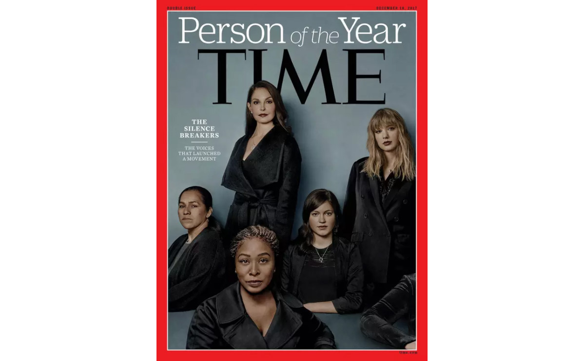
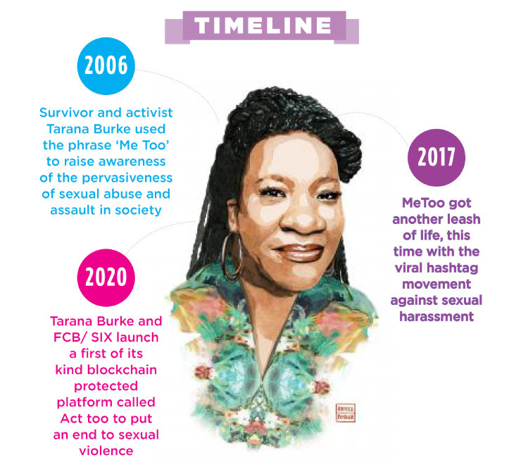
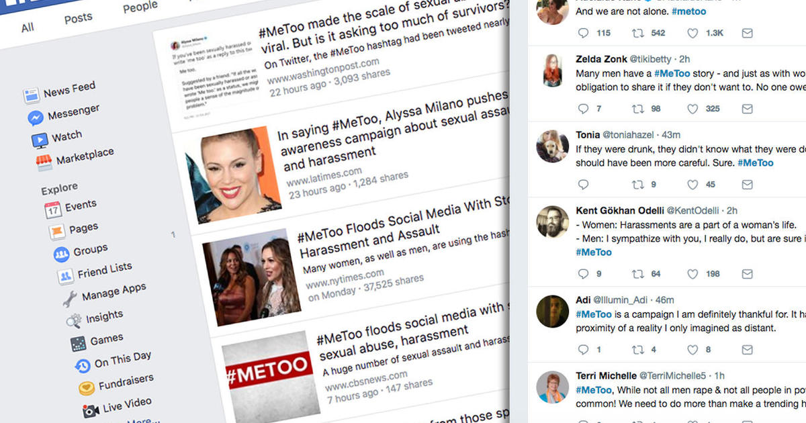
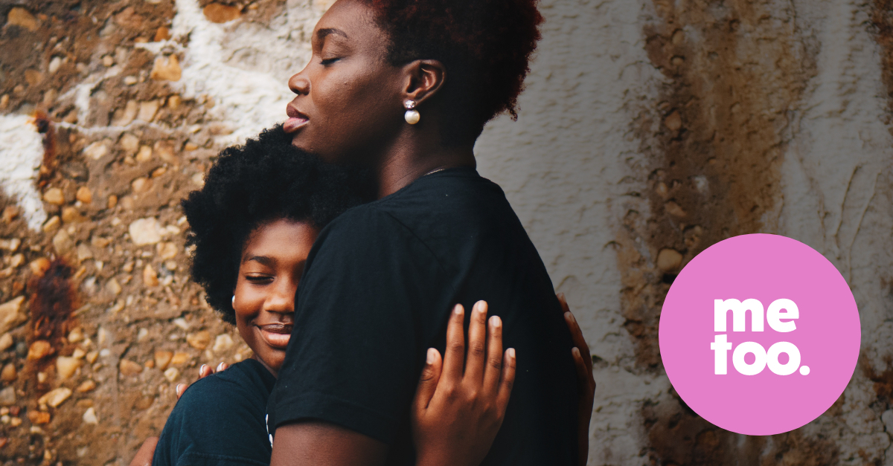

#MeToo Provided A Platform For Women to Come Forward & Seek Justice
Ashley Judd. Mira Sorvino. Gwyneth Paltrow.
Many (though not all) of the women who came forward in October 2017 to report being sexually harassed or assaulted by former producer Harvey Weinstein were like these actresses: wealthy, well-connected, and white. And though that doesn’t diminish what they experienced, it did lead to questions about whether the Me Too movement — which had existed for many years but rose in prominence following the allegations against Weinstein — would really have an effect beyond the most privileged people.
The Origin & Research
New data suggests that in at least one way, broader changes really are happening in the wake of Me Too.
Ro’ee Levy and Martin Mattsson, doctoral candidates at Yale University, studied the effects of the movement across 24 countries. Their research, supported by the Tobin Center for Economic Policy, found that Me Too increased overall reporting of sex crimes by 14 percent, with about a 7 percent increase in the US.
Their research, published Tuesday and provided exclusively to Vox ahead of time, also showed that in the US, the effects of Me Too appeared to cut across racial and socioeconomic lines — a significant find, especially since media coverage often focused on reports by relatively high-profile white women, leading to concerns that the movement’s growing prominence would have minimal impact on the lives of women of color.
“Our research shows that this is a social movement that changed the behavior of large shares of the population,” Mattsson said. “It’s not just a movement that impacted celebrities.”
However, there’s a big caveat: While the number of reported crimes increased, the number of crimes actually cleared by police did not. That points to something survivors and their advocates have long known — that reporting a crime to police doesn’t necessarily mean justice will be served.
The Me Too movement was founded in 2006 by activist Tarana Burke. But after October 2017, when the New York Times published allegations of sexual harassment and assault committed by Weinstein, more and more people began to come forward publicly to talk about their experiences of sexual misconduct. Stories that got the most media attention involved accusations against powerful men like Weinstein, Matt Lauer, and Kevin Spacey. And many of the people whose stories received the most coverage were wealthy, white actresses like Judd and Paltrow.
That left many wondering whether the rise of Me Too would have a real impact on survivors with less power and privilege. For instance, women of color in low-wage jobs were overlooked in a lot of initial Me Too coverage, despite their facing high rates of sexual harassment, as P.R. Lockhart reported for Vox.
Levy and Mattsson also wondered whether Me Too was having an effect beyond the most high-profile cases. So they looked at the reporting of sex crimes across 24 countries — all members of the Organisation for Economic Co-operation and Development, a group of the world’s wealthiest nations — in the months following October 2017.
In general, sex crimes are highly underreported, with only 33 percent of US survivors saying police were aware of the crime, Levy and Mattsson wrote in their paper, published Tuesday on SSRN, formerly known as the Social Science Research Network. Many survivors don’t report because they fear being disbelieved or blamed for their own assaults, Venkayla Haynes, an anti-violence organizer and advocate, told Vox in an email. Others are fearful of being traumatized yet again by police officers. “Sexual misconduct at the hands of law enforcement is very real, especially for marginalized communities,” Haynes noted.
The Fight For Change & Pivotal Events
Still, the Me Too movement inspired many to share their experiences on social media or in the press. In some cases, early, high-profile stories like the allegations against Weinstein helped people name what had happened to them as sexual assault for the first time. Levy and Mattsson wondered whether the movement also had an effect on reporting to law enforcement.
The answer, they discovered, was yes. After analyzing the data to weed out other factors that could affect reporting, they found that the rise of the Me Too movement led to a 14 percent increase in the reporting of sex crimes in the three months after October 2017. Reporting rates dropped after that point, but still remained above their pre-2017 levels, even 15 months after the movement began to grow.
In the US in particular, the movement led to a 7 percent increase in reporting, which the researchers determined using nationwide crime statistics from the FBI. That number may be understated, as the FBI only collects statistics on rape; when the researchers looked at city-level data that included a wider variety of sex crimes, they found a 13 percent increase in reporting as a result of Me Too.
Because of concerns that the movement’s impact might be limited to wealthy, white women, Levy and Mattsson analyzed the US data to find out whether the effect of Me Too on reporting varied by race or socioeconomic status. They did not find significant variations — the movement had an impact, according to their research, across race and class.
However, the researchers did find one major limitation of Me Too’s impact: While the movement increased the reporting of crimes, it didn’t appear to increase the rate at which those crimes were actually cleared by police. (A case was defined as cleared if a suspect was arrested or summoned to court, or if one was identified but not arrested due to factors beyond police control.) In fact, Levy and Mattsson wrote, most of the additional cases reported to police as a result of Me Too were not cleared.
The researchers caution that they only analyzed clearance data from October 2017 to December 2017, so some cases may have been cleared after that (sexual assault investigations can be complex, and police departments often have limited resources✎ EditSign to devote to them). Still, while the findings show that “the movement had an effect on people going to the police,” Levy said, “it probably had a weaker effect on the number of cases solved by police.”
For anti-violence advocates and those who work with survivors, the increase in reporting doesn’t come as a surprise. “The idea that reporting is up rings true to me,” Kathryn Laughon, a forensic nurse examiner and professor at the University of Virginia who studies intimate partner violence, told Vox. Unfortunately, she said, “What I haven’t seen is a substantially improved response to reporting.”
Higher rates of reporting don’t necessarily mean that authorities always take reports seriously, or that people who commit sexual assault actually face consequences. Many of the survivors whose reports became headline news at the height of the Me Too movement faced repercussions like job loss, while many powerful men accused of sexual misconduct later made career comebacks or never lost their jobs in the first place, Laughon pointed out. Few were charged with any crimes.
Moreover, arrest and incarceration are not the only possible responses to sex crimes. “Society has taught us that oftentimes, justice IS incarceration,” Haynes, the anti-violence organizer, said. “We haven’t thought about healing and ‘justice’ beyond the prison industrial complex.”
Restorative Justice & Awareness
Ultimately, Haynes said she wants American society “to get to a point where we provide more resources for survivors and look for solutions outside of the norm.” Laughon, too, “would like to build a world in which there are alternatives to how our current criminal justice system works” — including, potentially, a deeper examination of restorative justice, an approach that focuses on repairing the harm done to survivors rather than assigning punishment.
Laughon also noted that after an assault, survivors have the option to seek health care — which may include getting emergency contraception, post-exposure prophylaxis to protect against HIV, and referrals to counseling and other resources — without reporting a crime to law enforcement, if that’s their preference.
"The Movement Instantly Raised Awareness Dramatically."
Levy and Mattsson, meanwhile, say their data shows that social movements like Me Too can have measurable real-world effects, even if they don’t necessarily change everything. The movement “instantly raised awareness dramatically” around issues of sexual misconduct, Levy said, and led a significant percentage of people to take action. “This implies that public awareness campaigns, at least in certain contexts, can be effective,” he added.
Meanwhile, even if Me Too didn’t result in more suspects being arrested, it may have changed people’s perceptions of what it means to be a sexual assault survivor. One reason sex crimes are underreported, Levy said, is the ongoing stigma around experiencing such crimes. But the fact that more survivors were willing to report after the rise of Me Too suggests that, perhaps, “the movement succeeded in lowering some of these negative stereotypes,” he added.